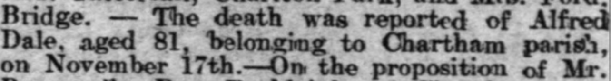
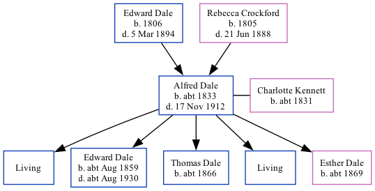

Alfred Dale c1833 - 1912
[ Home ] | [ Calendar ] | [ Surnames Index ] | [ Family History ]The child of Edward Dale and Rebecca CrockfordAlfred Dale, the three times great-uncle of Nigel Horne, was born in Chartham Hatch, Kent, England c. 18331,2,3, was baptized in Chartham, Kent, England on Mar 3, 1833 and married Charlotte Kennett (with whom he had 5 children: Alfred, Edward William, Thomas, Albert Jack and Esther, along with 2 surviving children) at St Mildred's Church, Canterbury, Kent, England on Nov 30, 18565. Like his father, he was an agricultural laborer.
Alfred spent all of his life in Kent, England. Throughout his life, he lived in several places around the county: at his birthplace on Jun 6, 18411; at New House Farm, Thanington on Mar 30, 18519; in Marshside, Kent, England on Apr 2, 18718; at London Road, Harbledown on Apr 3, 18812; on Plough Lane, Harbledown on Apr 5, 18913; at his birthplace on Mar 31, 19017 (the same place as his parents had been living on Jun 6, 1841); and at Shalmsford Street in Chartham on Apr 2, 19116.
He died on Nov 17, 1912 in Bridge, Kent, England4.
Parents
- Edward was born in 1806
- Rebecca was born in 1805
Children
- Edward William was born c. Aug 1859
- Thomas was born c. 1866
- Esther was born c. 1869
Citations
- 1841 England, Wales & Scotland Census - Findmypast (was age 9)
- 1881 England, Wales & Scotland Census - Findmypast (was age 49 and the head of the household)
- 1891 England, Wales & Scotland Census - Findmypast (was age 59 and the head of the household)
- England & Wales deaths 1837-2007 - Findmypast
- England & Wales Marriages 1837-2005 - Findmypast
- 1911 Census for England & Wales - Findmypast (was age 79 and the father of the head of the household)
- 1901 England, Wales & Scotland Census - Findmypast (was age 67 and the head of the household)
- 1871 England, Wales & Scotland Census - Findmypast (was age 38 and the head of the household)
- 1851 England, Wales & Scotland Census - Findmypast (was age 18 and a servant in the household)
Media
Whitstable Times and Herne Bay Herald 7 Dec 1912

1841 England, Wales & Scotland Census - GBC/1841/0014002935
England & Wales marriages 1837-2005 - BMD/M/1856/4/BL/000254/036
Kent, Canterbury Archdeaconry marriages - GBPRS/CANT/M/97062425/1
England & Wales deaths 1837-2007 - BMD/D/1912/4/AZ/000190/118
England Births & Baptisms 1538-1975 - R_885421716
Kent, Canterbury Archdeaconry Baptisms - GBPRS-CANT-B-96192361
1881 England, Wales & Scotland Census - GBC/1881/0004708694
1871 England, Wales & Scotland Census - GBC/1871/0014197843
1891 England, Wales & Scotland Census - GBC/1891/0005722708
1901 England, Wales & Scotland Census - GBC/1901/0005460114
1911 Census For England & Wales - GBC-1911-RG14-04302-0077-5
1851 England, Wales & Scotland Census - GBC-1851-0005788884
Family Tree
Generated by ged2site. Last updated on Nov 13, 2024